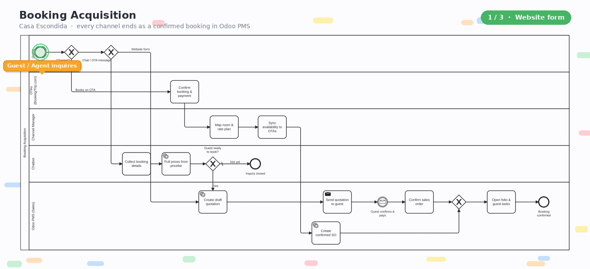
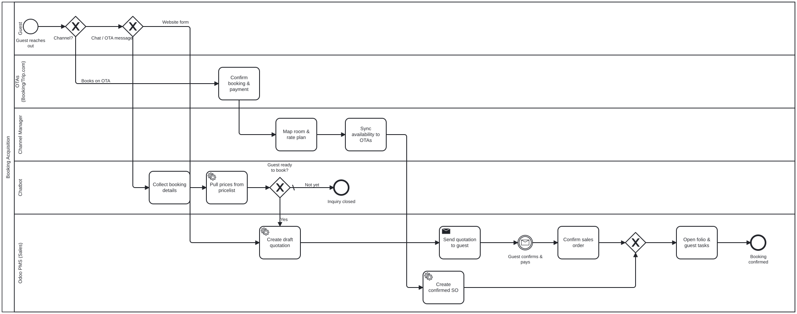

Website form, AI chatbot, and OTAs like Booking.com & Trip.com — every inquiry and booking, whatever the channel, ends as one confirmed booking with a folio in Odoo PMS.

Three journeys, one at a time — website form, chatbot and OTA direct — each traced through the swimlanes until the booking is confirmed in Odoo PMS.
The Channel Manager sits between Odoo PMS and the OTAs: rates and availability flow out to every channel, confirmed OTA bookings flow back in as sales orders — so the calendar is always one single source of truth.
